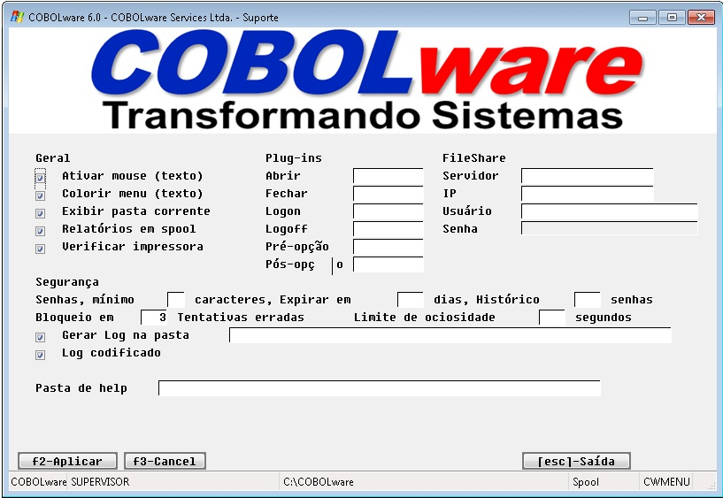
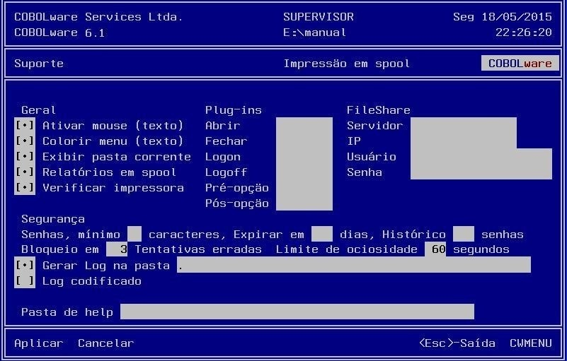

Parâmetros avançados.
|
Modo gráfico |
|
 |
|
Modo texto |
|
 |
Geral
Permite ligar/desligar
opções do gerenciador.
Ativar
mouse
Habilita o tratamento de mouse no modo
texto.
Colorir menu
Habilita
o destaque em cores de teclas de atalho nos menus no modo
texto.
Exibir pasta corrente
Habilita
a exibição do nome da pasta corrente no rodapé
das telas gráficas e no cabeçalho das telas
texto.
Relatórios em
spool
Habilita o controle de spool.
Verificar
impressora
Habilita a verificação do
posicionamento da primeira página da impressão direta.
O cabeçalho do relatório é impresso repetidas
vezes até que o usuário considere que o cabeçote
de impressão matricial esteja posicionado corretamente em
fomulários zebrados.
Plug-ins
São
programas que estendem as funções do gerenciador
podendo ser invocados no momento da ocorrência de determinados
eventos.
Abrir
Nome do
programa a ser invocado no momento da carga do gerenciador
antes de ser efetuado o logon.
Fechar
Nome
do programa a ser invocado no momento da finalização do
gerenciador.
Logon
Nome
do programa a ser invocado logo após o usuário ter-se
"logado" no gerenciador.
Logoff
Nome
do programa a ser invocado logo após o usuário ter
feito o "logoff" do gerenciador.
Pré-opção
Nome
do programa a ser invocado logo após a seleção
de uma opção de menu do gerenciador,
porém antes da execução da
mesma.
Pós-opção
Nome
do programa a ser invocado logo após o término da
execução de uma opção de menu do
gerenciador.
FileShare
Parâmetros de
conexão a um servidor FileShare.
Servidor
Nome
do servidor FileShare.
IP
Endereço
de IP do serviço de comunicação CCITCP2 do
servidor FileShare.
Usuário/Senha
Nome
de usuário e senha para conexão ao servidor
FileShare.
Segurança
Estabelece
regras de definição de senhas.
Caracteres
Quantidade
mínima de caracteres exigido para a senha (máximo de
30).
Dias
Ativa o recurso
de expiração de senhas estabelecendo a quantidade de
dias que uma senha pode permanecer vigente.
Senhas
Ativa
o recurso de histórico de senhas estabelecendo uma lista de
senhas já utilizadas pelo usuário desautorizando a
reutilização de uma senha que conste no
histórico.
Limite de
ociosidade
Estabelece o tempo limite (em segundos) que
o sistema pode ficar aguardando ações por parte do
usuário. Decorrido este tempo, o sistema retorna um nível
de função.
Gerar
log
Habilita a geração
de log (Histórico de operações realizadas no
sistema).
Na pasta
Pasta
onde o arquivo de log deve ser gravado.
Log
codificado
Habilita a
codificação do arquivo de log tornando-o ilegível
para outras aplicações.
Pasta
de help
Define a pasta
utilizada para armazenagem de arquivos de help.